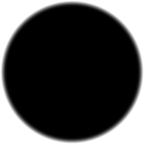
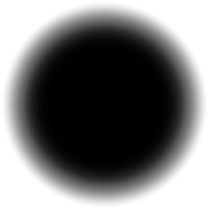
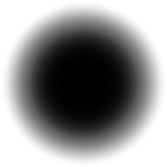
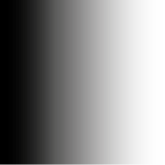
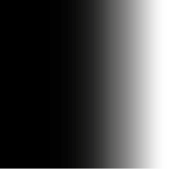
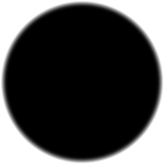
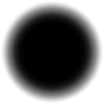
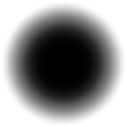
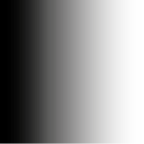
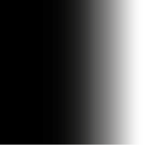

DITHROSCOOP


 









WHAT IS DITHERING?
In the 1980’s computers had 1-bit displays. In reference to images ‘bits’ refer to the number of tonal variation of a color. This means there were only two color options for a pixel. Grey-scaled images couldn’t be displayed. Dither algorithms are a solution for this problem. This code create an illusion of grey-scales. There are various types of dithering. Some create ordered patterns, others create disordered patterns. I’m the most interested in the second type because it acts more unpredictable. It is called error diffusion dithering. This algorithms look at each pixel of the image in sequence. Pixels more than 50% black become black and pixels with more than 50% white become white. The interesting part is the error in this code, which makes the patterns unpredictable. The error distributes the difference of the final (1-bit) pixel’s value and the original value to the neighbour pixels. What the algorithm does at one location influences what happens at other locations.